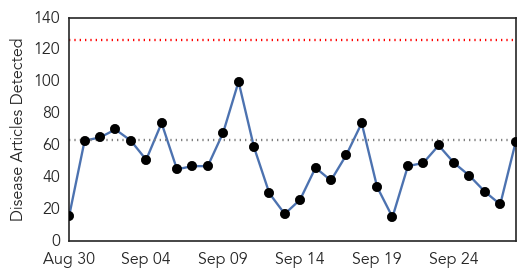
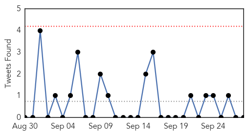
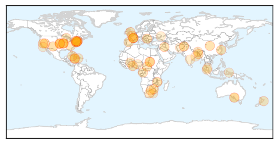
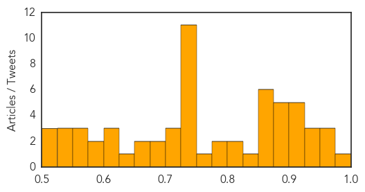

Toggle navigation
Early Warning
Daily Alerts
Unknown
Sep 28, 2015
Compare to:
-
Dengue Fever
Hemmorhagic Fever
Mold/Fungal Infection
Influenza
Meningitis
Pertussis / Whooping Cough
Middle East Respiratory Syndrome
Cholera
Hepatitis
Chikungunya
Yellow Fever
Bubonic Plague
West Nile Virus
Swine Flu
Ebola
Measles
Mumps
30 Day Trends
Web: 0
alerts
, 0
warnings
Twitter: 2
alerts
, 0
warnings
Top Articles:
Showing top 50 articles...
0.994
Carson City health department announces 2015 flu season community vaccination events
0.971
7 New Legionnaires’ Cases in Bronx Prompt Investigation
0.957
Education Ministry reports outbreak of hand, foot and mouth disease in several schools
0.952
SERHA Monitoring Cases of Hand, Foot and Mouth Disease
0.943
CDC’s Ryan Wallace: Today is World Rabies Day
0.937
Lyme disease numbers may level after spike in 2014
0.928
Sudan: Disease Afflicts Kabkabiya Children in North Darfur
0.922
Bacteria-borne disease surges in Kansas City-area children
0.912
Shigella On The Rise, 150 Cases Confirmed In Kansas City
0.912
88 confirmed cases of bluetongue in France, 2.2m vaccines available
0.905
Malaria infection season begins next Month
0.904
Nurse’s Aide Awarded $11.6 Million for Being Paralyzed by Mandatory Flu Vaccine
0.895
Indonesia’s march towards rabies elimination – Khanchit Limpakarnjanarat
0.895
Indonesia’s march toward rabies elimination
0.889
Outbreak of Hand, Foot and Mouth Rash in Schools
0.887
2015 Flu Season Vaccination Events for Carson City
0.881
Health Department Investigating New Cluster of Legionnaires' Disease Cases in the Bronx
0.866
Countries pledge 40,000 U.N. peacekeepers at U.N. summit
0.866
Bid to revive Miss Iraq pageant draws ire of hardline clerics, tribal leaders
0.862
FAO convenes meeting on Anthrax in West Africa
0.860
City officials are monitoring a cluster of Legionnaires' disease patients diagnosed in the Morris Park neighborhood of the Bronx
0.851
Health bosses issue norovirus threat warning
0.851
Drive to eliminate rabies
0.849
Meeting of Competent Institutions due to Suspicion of Ebola
0.821
Spike in Shigella Infections Emerges in Missouri
0.810
Back-to-school worms to watch out for
0.777
Two cases of meningococcal disease in Manawatu
0.777
Two cases of meningococcal disease in Manawatu
0.757
Filthy food mixer blamed for Burnside Hospital salmonella outbreak
0.749
Countries pledge 40,000 UN peacekeepers at summit
0.749
Spain PM rules out discussing split with Catalonia
0.749
Death toll rises after strikes hit Yemen wedding
0.749
Fresh clashes erupt at Jerusalem’s Al-Aqsa mosque
0.749
Germany sentences two Rwandan Hutu rebels to prison over DR Congo massacres
0.749
France’s Hollande steals the show on Broadway
0.747
Shigellosis cases spike in KC, numbers also up in Wichita area
0.744
Patients asked to bring 20 litters of water
0.741
Grand Valley Lanthorn
0.738
Bluetongue Moving Across Auvergne, French Government Ups Vaccine
0.731
Tens of thousands protest against Congo president’s bid to extend rule
0.715
Get flu shots early
0.705
Rising shigella cases have sickened 150 people in major U.S. city
0.704
World Rabies Day 2015: 59,000 people die of rabies globally each year
0.695
Vaccination the answer - Letters
0.692
Phuentsholing reports cases of canine distemper
0.669
Burnside Hospital salmonella
0.651
US Launches $300 Million Program to Fight HIV in Africa
0.638
The Charleston Chronicle, Walgreens to Provide Up To $15 Million Worth of Free Flu Shot Vouchers for Uninsured and Underinsured Americans
0.611
News in Brief 28 September 2015 (AM)
0.604
Centre to Help State in Fight against CKD
Top Tweets:
0.694
Divertido estuvo el EclipseLunar en que se hizo de noche en todo el planeta,como en el 96,todo se paralizo tipo Armagedon
0.596
RT: La contaminación esta en el aire y si no respiramos nos morimos. Ironías de la vida
0.574
RT: Creo que el eclipse es una copia de Tibisay dando los resultados... lo veremos en la madrugada. LaLunaParty
0.564
RT: les recomiendo que en ves de ver EclipseLunar que solo veran una mancha negra, miren las estrellas que hoy van a brillar co…
0.530
RT: Imaginen la pelea de astrólogos. — Alfonso León: "GEMINIS YO TE ELIJO" — Hermes "el iluminado" Ramírez: "TAURO CHORRO DE ESCA…
Web/News Articles

Tweets

Article Locations

Article Confidences
